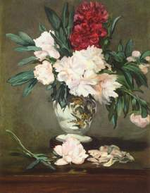
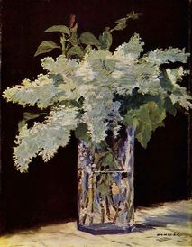
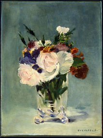
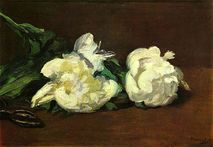
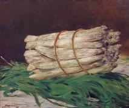
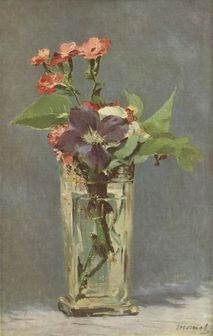
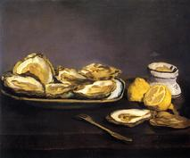
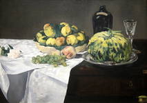
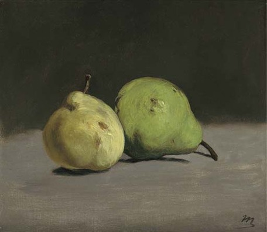

- Home
- Premières années
- Les débuts
- Les défis
- Natures mortes
- Œuvres
Édouard Manet
Natures mortes








Manet aimait aussi les natures mortes : « Un peintre peut tout dire avec des fruits ou des fleurs, ou des nuages seulement », affirmait-il. Une part non négligeable de son œuvre est consacrée à ce genre, avant 1870 surtout puis dans les dernières années de sa vie où la maladie l'immobilise dans son atelier. Certains éléments de ses tableaux constituent de véritables natures mortes comme le panier de fruits dans le déjeuner sur l'herbe , le bouquet de fleurs dans Olympia ou le pot de fleurs, la table dressée et différents objets dans le Petit déjeuner dans l'atelier. Il en va de même dans les portraits avec le plateau portant verre et carafe dans le Portrait de Théodore Duret ou la table et les livres dans le portrait d’Émile Zola. Mais les natures mortes autonomes ne manquent pas dans l’œuvre de Manet : l'artiste a ainsi plusieurs fois peint poissons, huitres ou autres mets (Nature morte au cabas et à l’ail, 1861-1862, Louvre-Abou Dhabi, ou “La Brioche”,1870 - Metropolitan Museum of Art, New York), rendant ainsi une sorte d'hommage à Chardin. Il a peint plus souvent encore des sujets floraux qui évoquent la peinture hollandaise (roses, pivoines, lilas, violettes) ou encore des fruits et des légumes (poires, melons, pêches, citrons, asperges) ; une anecdote existe à propos de la botte d'asperges : Ephrussi (qui inspira à Marcel Proust le personnage Swann dans A la recherche du temps perdu) ayant été acheté le tableau plus cher que le prix proposé, Manet lui fit parvenir un petit tableau (aujourd'hui au musée d'Orsay) représentant une seule asperge avec ce mot « Il en manquait une à votre botte ».
Au-delà du genre traditionnel, lses natures mortes d’Édouard Manet retiennent l'attention en constituant parfois de véritables mises en scène dramatiques, comme le montre le tableau du Vase de pivoines sur piédouche (1864) : par la composition des fleurs en train de se faner, des pétales tombées à terre et par le cadrage très serré sur le vase, le regard du spectateur est happé et attiré vers un mouvement de haut vers le bas.

La maladie et la mort
Édouard Manet, malade, fait une cure à Meudon Bellevue en 1880. Il séjourne au sentier des Pierres Blanches où il peindra plusieurs tableaux. Il obtient même un prix au Salon de 1881 et est décoré de la Légion d'honneur par son ami Antonin Proust devenu ministre des Arts : l'attribution est décidée malgré des oppositions fin 1881 et la cérémonie a lieu le 1er janvier 1882.
Affaibli depuis plusieurs années, il s’éteint finalement le 30 avril 1883 à l’âge de cinquante et un ans, des suites d’une ataxie locomotrice résultant elle-même d'une syphilis contractée à Rio. La maladie, outre les nombreuses souffrances et la paralysie partielle des membres qu’elle lui avait causées, a ensuite dégénéré en une gangrène qui a imposé de lui amputer le pied gauche onze jours avant sa mort. L’enterrement a eu lieu le 3 mai 1883 au cimetière de Passy, en présence notamment d’Émile Zola, d'Alfred Stevens, de Claude Monet, d'Edgar Degas et de bien d’autres de ses anciennes connaissances. D’après Antonin Proust, son camarade de toujours, on voyait dans le convoi funèbre « des couronnes, des fleurs, beaucoup de femmes ». Degas, quant à lui, aurait dit alors de Manet qu’« il était plus grand que nous ne pensions ».
Un ex-libris gravé par Félix Bracquemond en 1890 « MANET ET MANEBIT » (en latin : « Il demeure et demeurera », jeu de mots sur le nom du peintre) peut résumer le sentiment général du monde des arts après sa disparition.